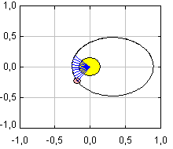
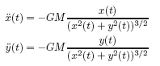

Planetary motionKepler discovered his three laws of planetary motion after a titanic analysis of years of astronomical observations by Tycho Brahe. Newton's inverse-law of gravitation allows us to reformulate this motion in modern terms using the equations for a massless test particle about a particle of mass M located at the origin: |
 |

where M is the combined mass of the Sun and the planet and G is the universal gravitational constant. The xy-coordinates for the massless test particle are the relative position of the planet with respect to the Sun in this two-body approximation of the solar system.
The initial values for x and y and its derivatives must be taken from direct astronomical observation.In this simulation, they are chosen arbitrarily.